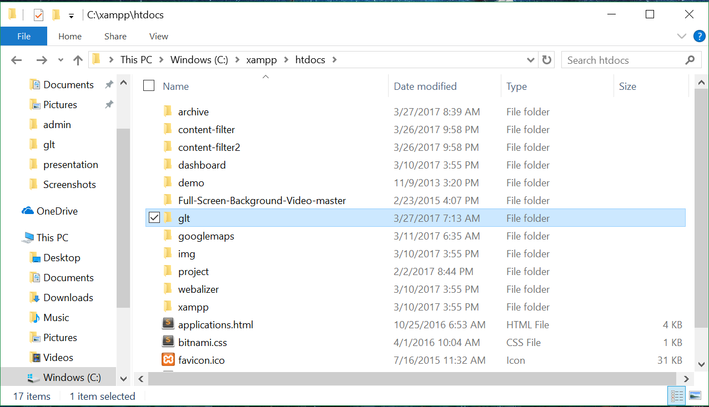
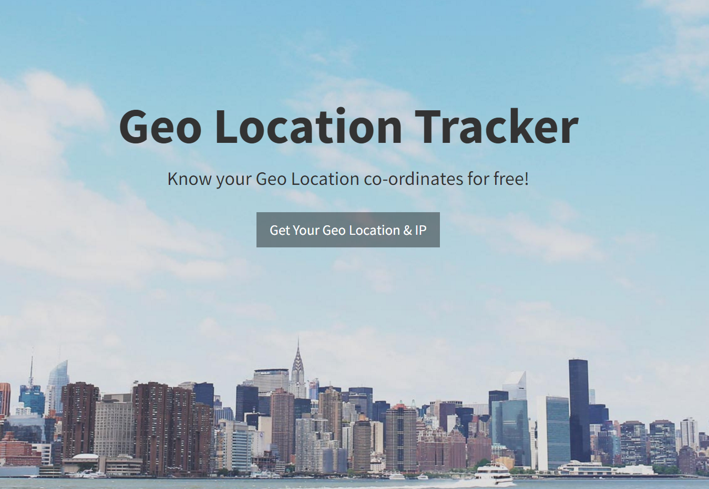
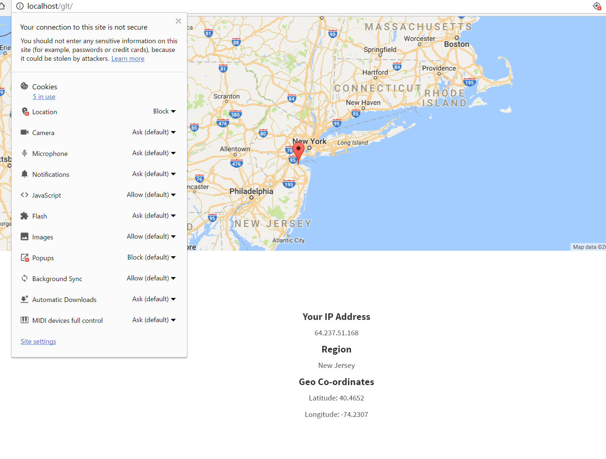
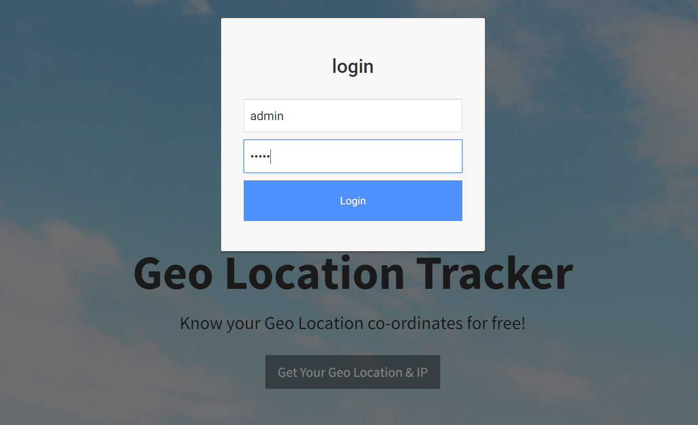
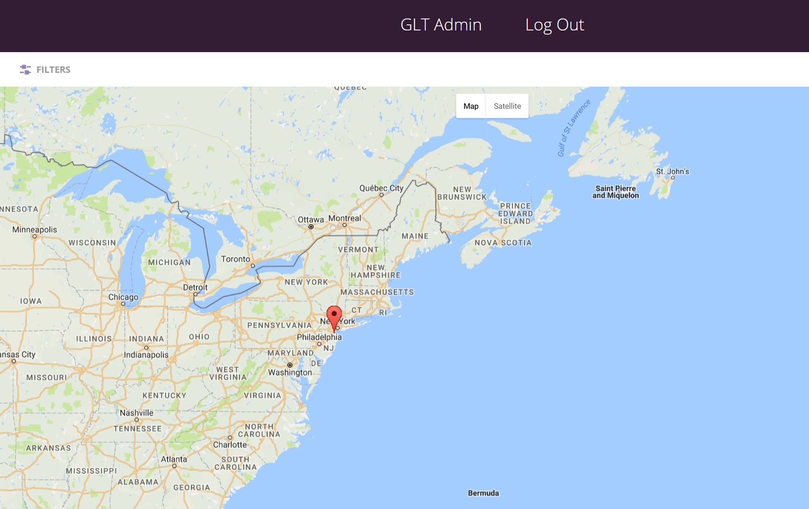

Geo Location Tracker
What does GLT application do?
It tracks and monitors the client's geo location and ipaddress.
GLT Modules
- Application landing page
- Admin login modal
- Admin monitor map
What i implemented?
| Backend | - | PHP |
|---|---|---|
| Client-Server Communication | - | Ajax Calls |
| Map API | - | Google Maps |
| API to get Client IP | - | api.ipify.org |
| API to get Geo Location from IP | - | ip-api.com |
What you need?
- Xampp (Local Web Server)
- Apache (PHP)
- PHPMyadmin (MySQL)
- Browser (Chrome recommended )
- Access to internet
Xampp installation
Click logo to download Xampp and later install it
After Xampp installation
Open Xampp and start Apache , MySQL

After Starting localserver
Move GLT Application folder into c:/xampp/htdocs
After Starting localserver
Check if localserver is working http://localhost
Click below icon to create database and store the given data including geo-coordinates into it.
Please wait 1-2 mins untill all the data is uploaded.
GLT Application is live
Usage of GLT
If Client refuses to provide gps access, GLT will get the client's location using Client IP-address.
Admin Login Modal
Username: admin (case-sensitive)
Password: admin (case-sensitive)
Admin monitor map
In Default the map will show all the client locations who accessed the site since 5 mins.
Monitor map filters
Admin can select any option provided in the filters.